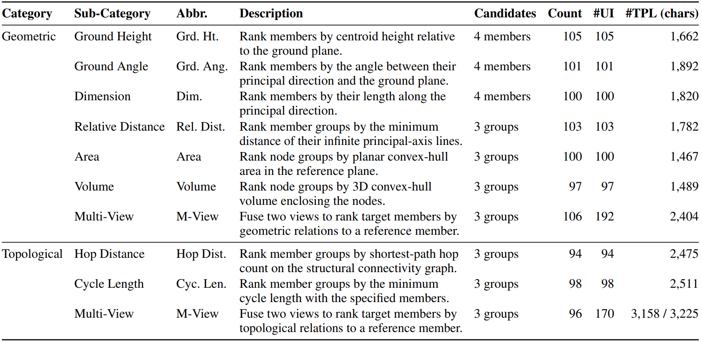
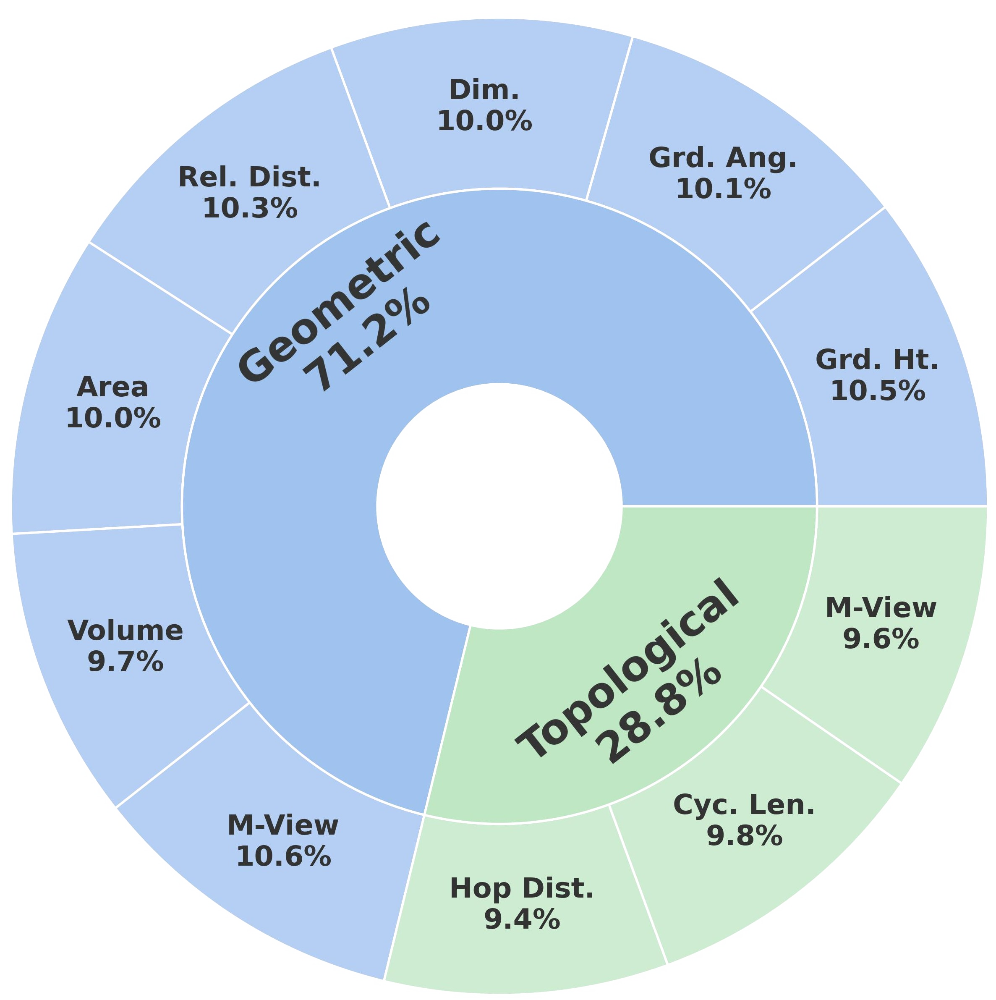
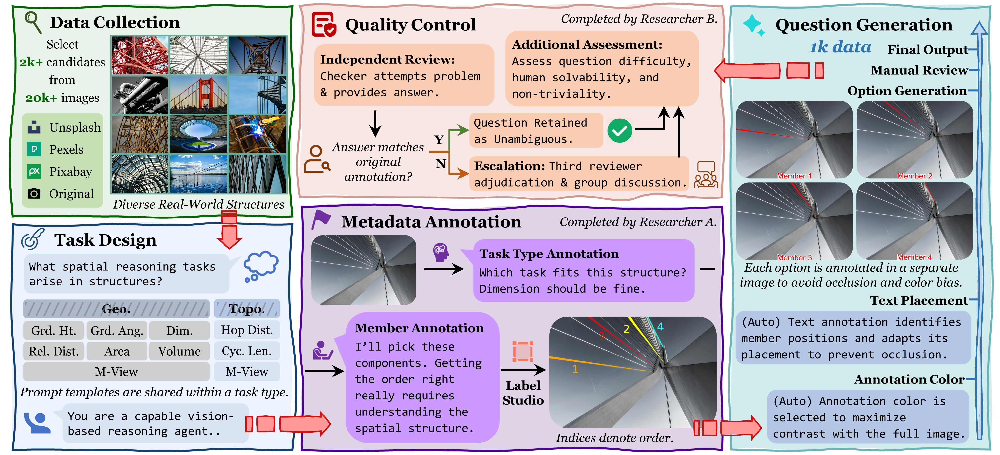
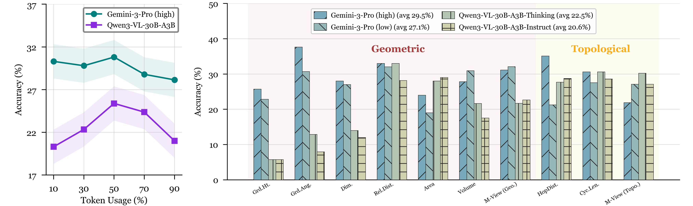
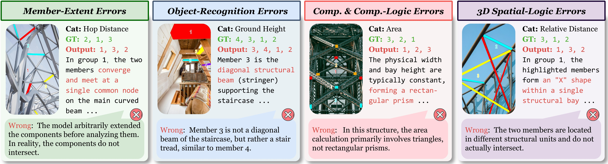

Dataset
Explore the SCSR task taxonomy and dataset composition, browse samples in the interactive viewer, and see how SSI-Bench is constructed.
Overview


Dataset Viewer
Question
Original
Candidates
#0

Construction Pipeline

Leaderboard
Performance comparison of different models on SSI-Bench. Dark highlighting indicates the best result within each category, light highlighting denotes the second-best.
Click on column headers to sort the results
Proprietary
Open-Source
Baseline
Analysis
Key results, thinking impact, and representative failure modes on SCSR—highlighting where current VLMs succeed, where they fail, and what is still missing for constraint-consistent 3D reasoning.
Key Results
Results are reported in terms of taskwise accuracy and pairwise accuracy on SSI-Bench. Compared with prior spatial benchmarks in
largely unconstrained settings, accuracies are substantially lower, suggesting that constrained-manifold reasoning is
harder and less amenable to 2D shortcut cues.
Constrained-manifold spatial reasoning remains hard
Even strong VLMs are far from human performance on SSI-Bench: the best model reaches
33.60% average taskwise accuracy, while humans achieve
91.60%. The random-ranking baseline is 12.85%.
Advanced open-source models still trail proprietary
counterparts
A consistent gap separates open-source and proprietary models across geometric and
topological tasks. Proprietary systems lead the leaderboard (~30%), while top
open-weight models stay around ~20%.
Progress is incremental; scaling is inconsistent
Performance improves over time across major lineages, but gains are uneven and often modest (e.g., Gemini-2.5 →
Gemini-3). Within-family scaling yields limited gains (e.g., Qwen3-VL:
19.20% → 21.90%).
Examples from the leaderboard: Gemini-3-Flash (33.60%) and Gemini-3-Pro (29.50%) lead the proprietary
group, while GLM-4.6V (22.20%) and Qwen3-VL-235B-A22B (21.90%) are among the strongest open models.
Overall performance indicates that SCSR remains broadly unsolved.
Impact of Thinking on SCSR
We compare matched settings under the same evaluation protocol: Gemini-3-Pro with two thinking levels
(high vs. low) and Qwen3-VL-30B-A3B with two variants (Thinking vs.
Instruct) on the full benchmark.

- Modest gains: Gemini-3-Pro improves from 27.1% (low) to 29.5% (high); Qwen3-VL-30B-A3B improves from 20.6% (Instruct) to 22.5% (Thinking).
- Token usage is a weak proxy: accuracy is non-monotonic and often peaks at moderate usage, where extra tokens can reflect uncertainty rather than better inference. Very high usage can correspond to longer deliberation over an incorrect structural hypothesis.
- Task-dependent effects: thinking helps more when evidence is stable, but can be mixed or negative on 3D-consistency bottlenecks (e.g., Multi-View and Volume).
Takeaway: thinking provides incremental benefits, but doesn't resolve dominant failure modes that require
stable 3D grounding and cross-view correspondence.
Error Analysis
To diagnose bottlenecks, we manually inspect sampled questions with Gemini-3-Pro as a
representative model, using its reasoning traces to categorize failures.

- Member-extent: over-/under-extending members under occlusion and clutter, breaking endpoint-based comparisons.
- Object recognition: misidentifying components/nodes and coarse orientations, hurting criteria like Ground Angle.
- Computation & logic: optimizing the wrong quantity (e.g., 2D area vs. 3D volume) or applying invalid simplifications.
- 3D spatial logic: weak depth and cross-view correspondence; unstable relational composition in Multi-View settings.
Overall, the performance gap reflects both imperfect visual grounding and limitations in globally consistent 3D
reconstruction under manifold constraints—core capabilities for SCSR.